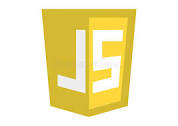

JAVASCRIPT
JavaScript, often abbreviated as JS, is a programming language that conforms to the ECMAScript specification. JavaScript is high-level, often just-in-time compiled, and multi-paradigm. It has curly-bracket syntax, dynamic typing, prototype-based
object-orientation, and first-class functions
As a multi-paradigm language, JavaScript supports event-driven, functional, and imperative programming styles. It has application programming interfaces (APIs) for working with text, dates, regular expressions, standard data structures, and the
Document Object Model (DOM). However, the language itself does not include any input/output (I/O), such as networking, storage, or graphics facilities, as the host environment (usually a web browser) provides those APIs.